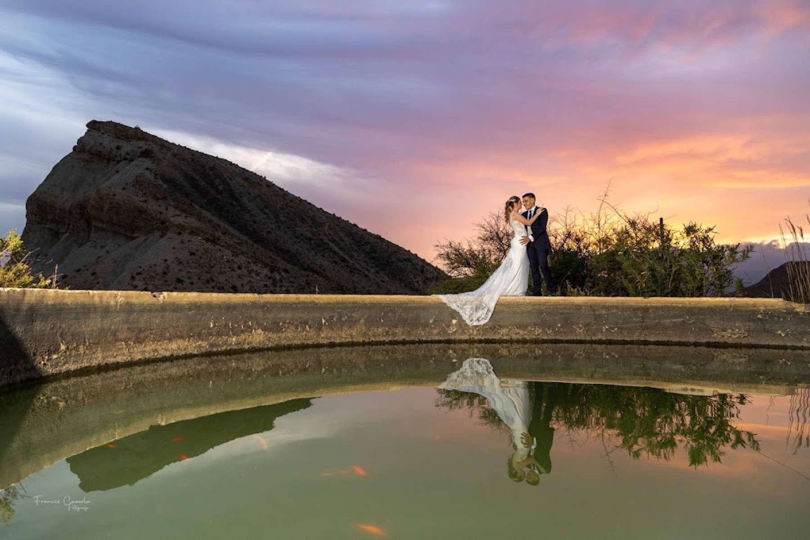
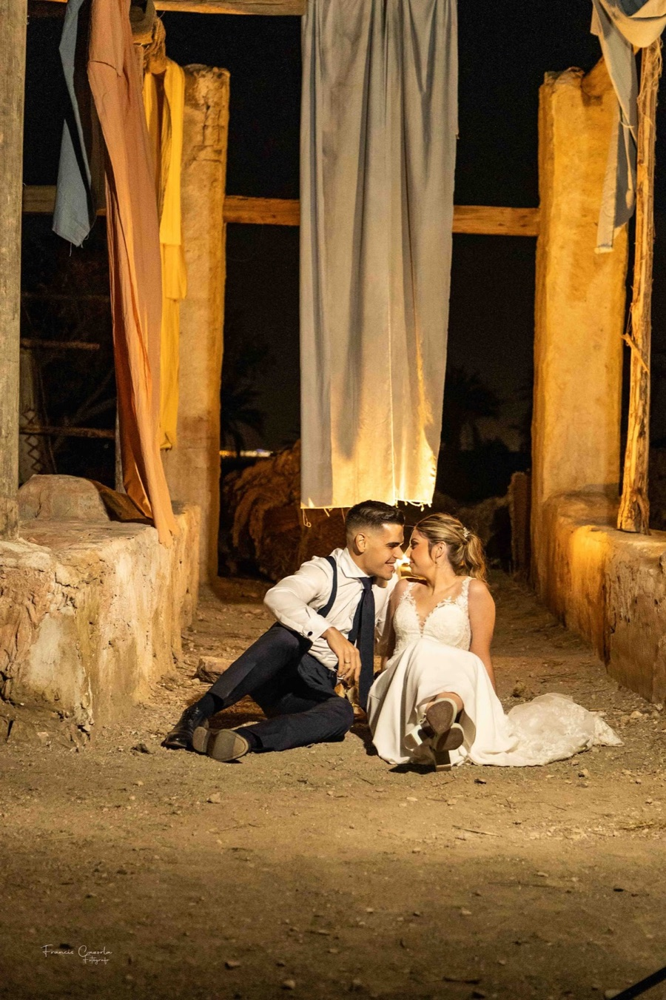

Bodoni Moda · Propuesta principal
La calma.
El pulso.
La verdad.
Mi elección para esta dirección: contraste marcado y mayúsculas con presencia. Los dos tamaños de portada dan altura y jerarquía sin deformar las letras.
Ver aplicada a toda la web ↗Una dirección editorial de alto contraste, inspirada en el lenguaje de las revistas de moda. La misma fotografía y las mismas palabras, con tres interpretaciones tipográficas y una alternativa fotográfica en blanco y negro para comparar.

Fotógrafo de bodas en Almería
El día pasa. La emoción permanece.
Fotografías para volver a vivirlo.
Comprobando la carga de la tipografía…
La calma.
El pulso.
La verdad.
Mi elección para esta dirección: contraste marcado y mayúsculas con presencia. Los dos tamaños de portada dan altura y jerarquía sin deformar las letras.
Ver aplicada a toda la web ↗La calma.
El pulso.
La verdad.
Una alternativa más delicada y literaria. Conserva la composición en mayúsculas, con un dibujo que percibo más suave y cercano.
Ver aplicada a toda la web ↗La calma.
El pulso.
La verdad.
La opción más ligera de la propuesta. Sus líneas limpias permiten explorar una expresión más minimalista con las mismas imágenes.
Ver aplicada a toda la web ↗
Lo queUna alternativa adicional
Una fotografía vertical real de Francis, con la pareja en el centro de la escena. Los titulares enmarcan ese instante desde arriba y desde abajo; la imagen conserva su luz y sus texturas.
Las copias son independientes de los originales. Puedes combinar esta portada con cualquiera de las tres familias.
DM Sans se mantiene en párrafos, botones, navegación y formulario. La portada actual se conserva. La alternativa utiliza copias de una fotografía del portfolio con tratamiento visual en blanco y negro. Los datos profesionales, metadatos, mapa, enlaces y la lógica de WhatsApp se mantienen.
Las familias se cargan desde Google Fonts. Si no hay conexión se utilizará la alternativa del sistema; el aviso de arriba indica si se ha podido cargar la familia seleccionada. Esta página de comparación está separada de la navegación de la web.